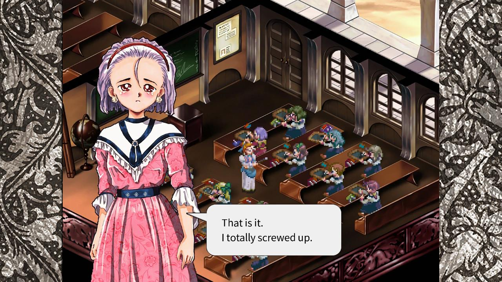
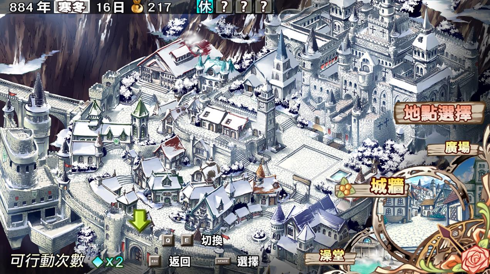
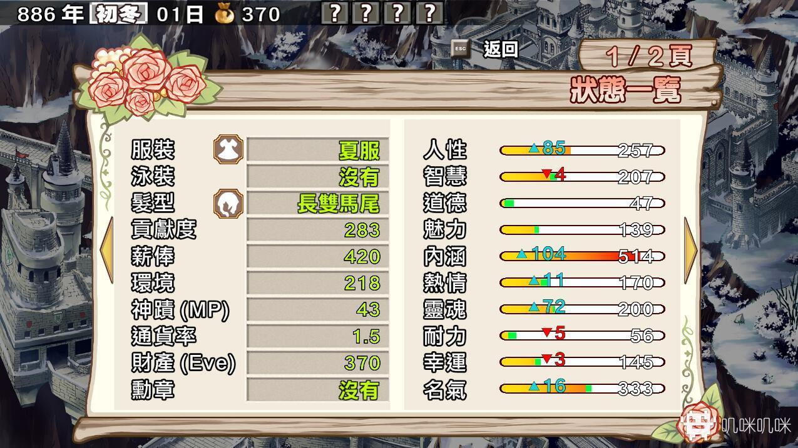
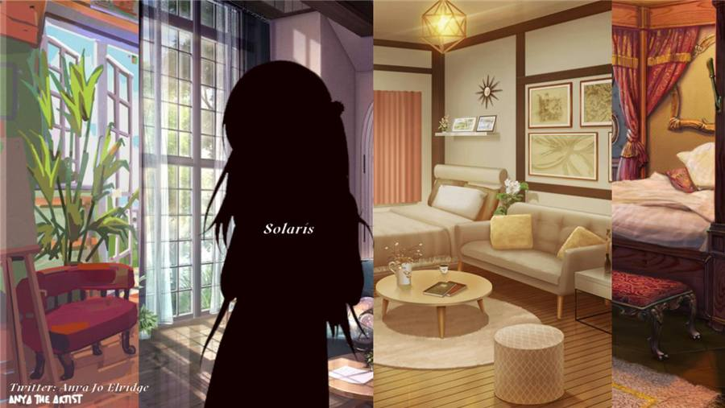
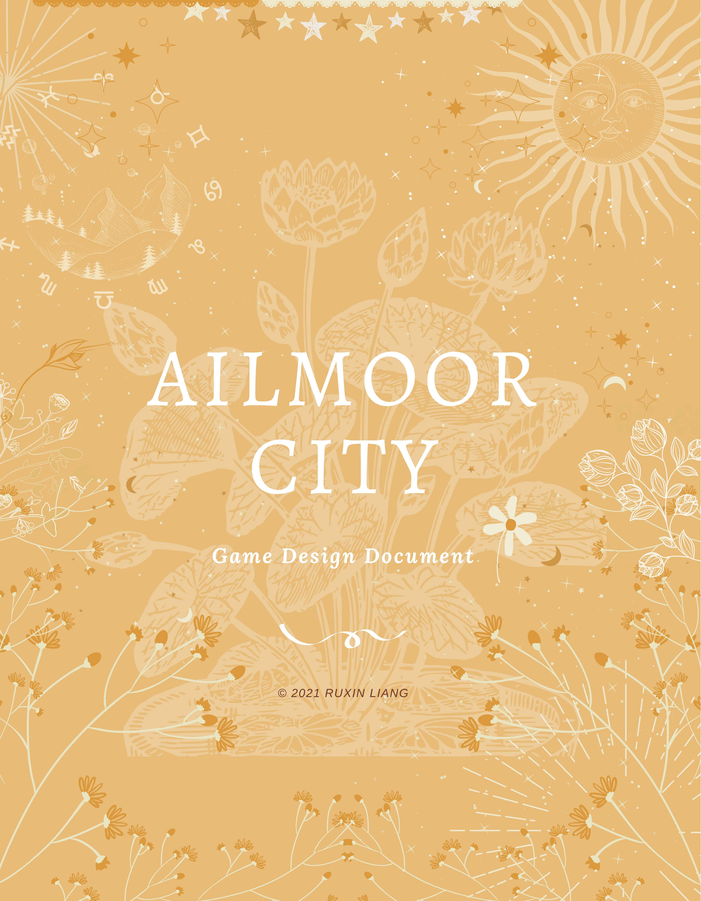
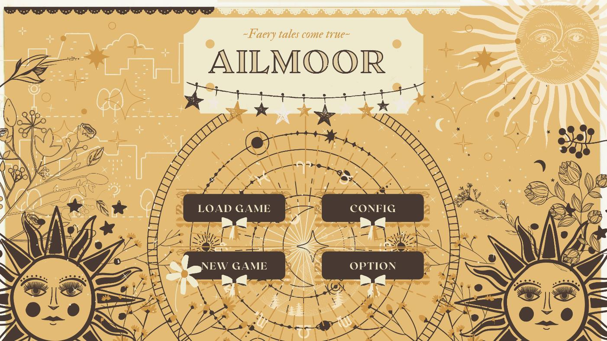
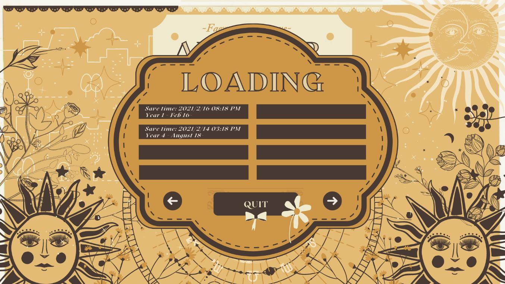
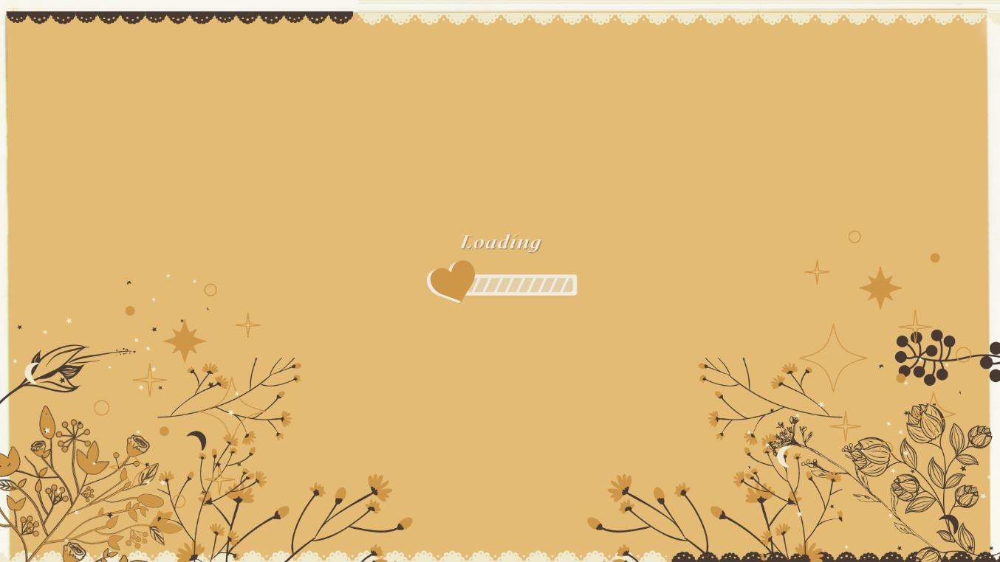
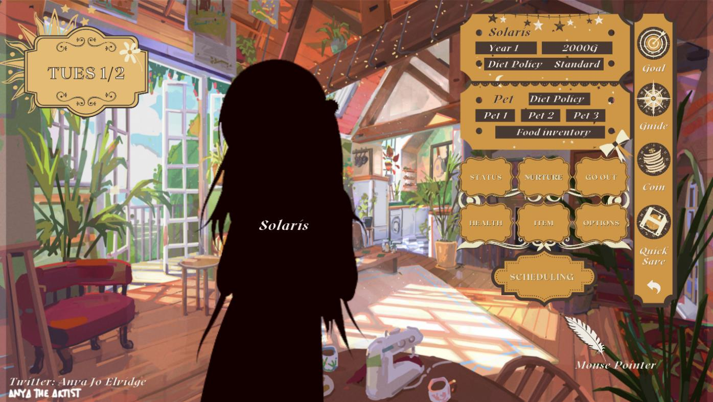
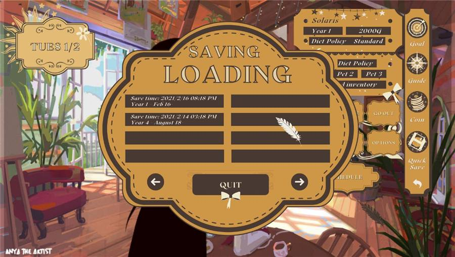

Year 1 / Beginning Spring
Arrival and basic routine
Solaris enters Ailmoor, meets early companions, learns basic scheduling, and watches festivals before she can fully compete.
Cross-platform interactive narrative
A character-driven life simulation set in a magical post-war city, where six years of study, work, friendship, and small moral choices decide both Solaris's future and the fate of five coexisting species.
World
Ailmoor is set in Nawlore, a parallel-world nation formed after a long war between humans and invading Fiends ended in forced peace. The player does not decide whether peace exists; they decide what peace becomes through daily life.
Solaris arrives from the small town of Ylabelle with three companion creatures and almost no money. The city receives her as both student and outsider: she can study, work, rest, hunt, make friends, enter competitions, and eventually cross into hidden districts that only open when her indices, relationships, and prior choices align.
The world is deliberately uneven. Snow-white stone streets, old imperial buildings, botanical ornament, civic academies, abandoned wartime structures, and "ghost areas" of purple mist all sit in one navigation space. The result is not pure escapism, but a city that keeps visible records of a war it survived.
The project frames self-determination as civic consequence. Solaris's ordinary schedule shapes her body, taste, moral direction, social access, magical capacity, and the way each species imagines the city's future.

Systems
Ailmoor turns ordinary scheduling into authorship. Classes, work, rest, hunting, festivals, friendships, and pet care all feed into a seventeen-dimension character space.
The player plans Solaris's life in half-month rounds. Every choice changes visible and hidden values that determine who trusts her, which places admit her, which jobs she can perform, and which endings remain possible. The interface makes self-development legible without reducing the story to a single optimal route.
The companion-creature system runs in parallel. Solaris's three creatures need food, mood management, and combat consideration across the full six-year arc. Later, additional creatures can be rescued or adopted, and the Dark Avenue path can mutate companions through latent magical bloodlines.

Narrative Arc
The structure is long-form rather than single-branch. A player may complete a run and still miss whole friendship arcs, hidden objects, Dark Avenue conditions, and future-trend outcomes.

Solaris enters Ailmoor, meets early companions, learns basic scheduling, and watches festivals before she can fully compete.
More companion stories unlock, professional courses become available, hunting missions open, and Dark Avenue first becomes reachable.

Magic creation, rare creatures, player-run businesses, full Dark Regions access, and the ending architecture converge.
Ailmoor's central question is not whether different beings can share a city. It is what daily choices, habits, friendships, and ambitions require from each person before coexistence becomes real. Theme adapted from the Ailmoor City authored project treatment
Visual Direction
The current visual pass gives Ailmoor a finished identity: gold-on-cream title plates, ornate buttons, snow-lit city maps, painterly interiors, isometric civic spaces, and interface panels that feel like objects from the world itself.




Interface
The A11 interface material establishes repeatable screen grammar: a calendar panel, gameplay field, operation menu, status bars, pet status, shortcut rail, and modal panels that share the same ornament system.


The prototype uses stable screen regions so the player can repeatedly scan the same places for time, goals, companion state, money, guide access, and schedule commands. This matters for a life simulation because the player returns to these screens hundreds of times.
Buttons carry the same scalloped frame language as the main menu and save/load overlays. The visual system is decorative, but the hierarchy stays practical: primary commands sit in fixed clusters, status panels use consistent slots, and long-term progression remains readable at a glance.
Development
The project has moved beyond exploratory concepting. The world, system architecture, narrative branching, and current visual identity are established; the active work is production-grade 2D assets and engine-side preparation.
78-page Game Design Document completed and deposited under copyright, establishing the city, species, six-year arc, attributes, cast, and endings.
First character-design and world-building moodboards, species silhouettes, district concepts, interiors, and street references.
Branching dialogue, ending-condition tuning, companion-creature prototypes, friendship logic, and Dark Avenue gating were refined.
Cover frame, classroom dialogue, civic map, status UI, main menu, shop interface, room interface, and loading UI established the production look.
Production-grade UI screens, in-game 2D character and environment art, dialogue-system visuals, and front-end flow assembly are in progress.
Release Path
The next production milestone is an engine-side vertical slice covering Year 1 content, two companion NPCs, the live cultivation system, companion-creature mechanics, and the first wilderness battle map.